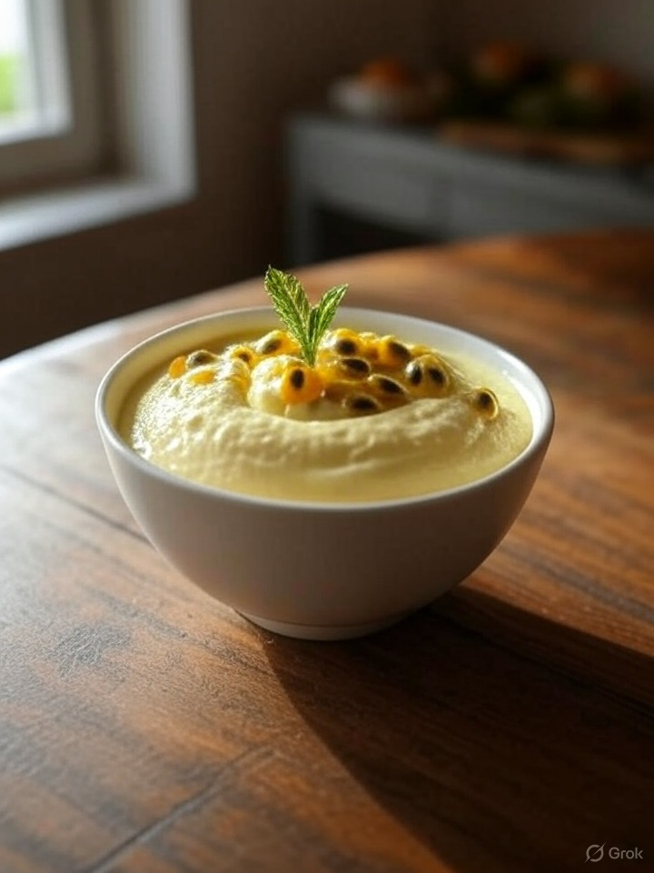

Mousse de Maracujá Proteico
R$ 10,90
Cremoso, refrescante e nutritivo, o Mousse Proteico de Maracujá é a escolha perfeita para quem deseja um doce leve e funcional sem abrir mão do sabor tropical. Preparado com iogurte grego natural, que garante uma textura suave e rica em proteínas, combinado com whey protein de alta qualidade e polpa natural de maracujá, esta sobremesa une praticidade, sabor e benefícios nutricionais em uma única colherada. Seu sabor equilibrado entre o doce e o cítrico agrada ao paladar e ainda traz os benefícios calmantes naturais do maracujá. Ideal para o pós-treino, lanche da tarde ou como sobremesa leve.
Informações Nutricionais
Calorias:
140 kcal
Proteínas:
12g
Carboidratos:
10g
Gorduras:
5g
Ingredientes
- Iogurte grego sem açúcar
- Polpa de maracujá
- Whey protein sabor baunilha
- Mel ou xilitol